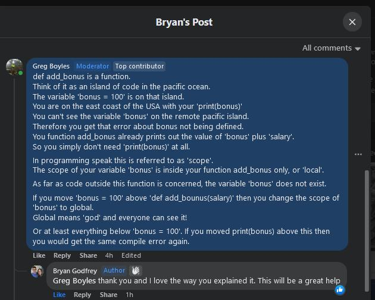

I am currently located in Doreen Victoria.
Why choose me?
- Professional, hardworking & reliable
- WWCC: 050748A-03
- Bachelor of Science, Univerity of Melbourne
- Graduate Diploma in Computer Science
- Reasonable hourly rate: $50 per hour
I can teach anyone from age 8 to 80.
I have an encyclopedic knowledge of many areas of science and IT of and passion for passing that knowledge on to any one interested in learning:
- Biology
- Chemistry
- Maths
- Physics
- Biochemsitry
- Genetics
- Histology
- Histopathology
- Immunology
- Microbiology
- Pathology
- Physiology
- Virology
- Coding
- Digital Electronics
My greatest strength is in being able to create visual aids and diagrams, and come up with every day analogies that make it easier for students to develop a deep understanding of concepts. My aim is to teach self reliance and confidence in their natural abilities.
My philosophy with mathematics and coding is repition and practice, until the steps to solving a particular type of problem becomes almost a reflex action. Once there the student as 'spare' mental capacity to develop a deeper understanding of the underlying concepts. In much the same way that an apprentice carpenter must be able to cut a recess for a butt hinge reliably and accurately before thay can move on to learning how to go about hanging a door.
Here is an example I created in an MS Word document to help my daughter understand mathematical sequences.

The blue bit can be moved across the grid.
Here is another example concerning scope in coding.

The blue bit can be moved across the grid.
Here is another example that explains the concept behind implementaion of a C++ class.
Class definition:
class CRainbow{
public:
// Construction, destruction and initialisation
CRainbow();
virtual ~CRainbow();
// Interface
uint32_t getRandomSecondaryColor();
uint32_t getOppositeSecondaryColor(uint32_t nColor);
uint32_t getNextColor(const uint8_t nSteps = 1);
uint32_t getRandomColor();
uint16_t getColorCount();
uint32_t getColor(const uint16_t nColorIndex);
uint32_t getColor(const char* cstrColorName);
const char *getColorName(const uint32_t nColor);
bool isPrimaryColor(const uint32_t nColor);
bool isSecondaryColor(const uint32_t nColor);
protected:
// Internal data
static const PROGMEM uint32_t m_arrayColorTable[];
uint16_t m_nI, m_nMainI;
uint8_t m_nAnalogPinRandomSeed;
};
What a class definition essentially is:
class CRainbow / TOC CRainbowpublic: / Available for you
Introductory:
CRainbow() / Forward
virtual ~CRainbow(); / Epilog
Chapters:
uint32_t getRandomSecondaryColor();
uint32_t getOppositeSecondaryColor(uint32_t nColor);
uint32_t getNextColor(const uint8_t nSteps = 1);
uint32_t getRandomColor();
uint16_t getColorCount();
uint32_t getColor(const uint16_t nColorIndex);
uint32_t getColor(const char* cstrColorName);
const char *getColorName(const uint32_t nColor);
bool isPrimaryColor(const uint32_t nColor);
bool isSecondaryColor(const uint32_t nColor);
protected: / For office use only & not available for you
Internal data
static const PROGMEM uint32_t m_arrayColorTable[];
uint16_t m_nI, m_nMainI;
uint8_t m_nAnalogPinRandomSeed;
};
Class implementation (one of the functions only):
uint32_t CRainbow::getColor(const uint16_t nColorIndex){
uint32_t nColor = pgm_read_dword(m_arrayColorTable + nColorIndex);
return nColor;
}
What a class implementation essentially is:
uint32_t CRainbow::getColor(const uint16_t nColorIndex) / Chapter 'getColor'{ / Begin chapter
The contents of chapter 'getColor':
uint32_t nColor = pgm_read_dword(m_arrayColorTable + nColorIndex);
return nColor;
} / End chapter